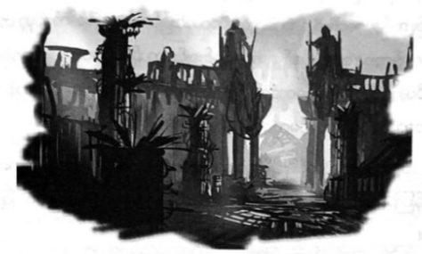

ရှေးဟောင်းမြို့ ကြီးကို ဖျက်ဆီးကြသူများ
အိုလံပတ်စ်သို့ သွားရာတံတားမှာ တဖြည်းဖြည်း ပြိုကျနေပေပြီ။ ဓာတ်လှေကားမှ ထွက်သည်နှင့် အဖြူရောင် ကျောက်သားများမှာ ခြေထောက်အောက် မှာပင် အက်ကွဲစပြု၏။
“ခုန်ကြ …”
ဂရိုဗာ အော်ဟစ် သတိပေး၏။ တောင်ဆိတ်တစ်ပိုင်း ဖြစ်သော သူ့အတွက် ခုန်ရန်ကိစ္စမှာ မခက်ခဲချေ။ ကျောက်တုံး နောက်တစ်တုံးဆီ ဂရိုဗာ ခုန်ကူးသွားချိန်၌ ပါစီတို့ ကျောက်တုံးမှာ ဆိုးဆိုးဝါးဝါး တိမ်းစောင်းလာခဲ့သည်။
“ငါ အမြင့်ဆို မုန်းတယ် ..”
အော်ရင်းဟစ်ရင်း တာလီယာနှင့် ပါစီ ခုန်ထွက်သွားကြသည်။ သို့သော် အန်နာဘတ်မှာ ခုန်နိုင်သည့် အခြေအနေ မျိုး မရှိ။
“ပါစီ …”
ကျောက်တုံး ပြိုကျသွားချိန်မှာပင် အန်နာဘတ်၏ လက်ကို ပါစီ လှမ်းဆွဲ ထားလိုက်နိုင်သည်။ ထိုတစ်ခဏတွင် နှစ်ယောက်လုံး ပြုတ်ကျသွားပြီဟု ပါစီ ထင် မိသည်။ အန်နာဘတ်မှာ လေထဲတွင် တွဲလောင်းဖြစ်နေပြီး သူမ၏လက်မှာ တဖြည်းဖြည်း ချော်ကျနေကာ ပါစီနှင့် လက်ချောင်းချင်းသာ ချိတ်မိတော့သည်။ ဂရိုဗာနှင့် တာလီယာတို့က ပါစီ့ ခြေထောက်ကို ဆွဲထားကြပြီး ပါစီ ခွန်အား ပိုရှိလာခဲ့သည်။ အန်နာဘတ်ကို သူ လက်မလွတ်နိုင်။
သူမကို ပါစီ ဆွဲတင်ပြီးချိန်တွင် နှစ်ယောက်လုံး လမ်းပေါ်၌ လဲကျသွားသည်။ အတန်ကြာမှ တစ်ယောက်ကို တစ်ယောက် ဖက်ထားမိကြမှန်း ပါစီ သတိ ပြုမိလာသည်။
“ကျေးဇူး …”
“ရပါတယ်” ဟု ပြန်ပြောရန် ပါစီ ရည်ရွယ်သော်လည်း ပါးစပ်မှ ဘာသံမှ ထွက်မရချေ။
“မြန်မြန်သွားရအောင် …”
ဂရိုဗာက သူတို့ကို ဆွဲထူရင်း ပြော၏။ အိုလံပတ်စ်ဆီသွားရာ တံတားမှာ ကျောက်တုံးများ ဆက်တိုက် ပြိုကျ လာပြီ ဖြစ်သည်။ တောင်ခြေသို့ ပါစီတို့ ရောက်ချိန်မှာပင် တံတားမှာ လုံးဝပြိုကျသွားခဲ့၏။
ဓာတ်လှေကားကို ပြန်လှည့်ကြည့်ကြရာ လေထဲတွင် သတ္တုတံခါးနှစ်ချပ်သာ ကျန်ရစ်ပြီး ပြန်သွားရန် မဖြစ်နိုင် တော့ပေ။
“ငါတို့ချည်းပဲ ရှိတော့တယ် …”
ဂရိုဗာက …
“အိုလံပတ်စ်နဲ့ အမေရိကရဲ့ ဆက်သွယ်မှု ပျက်စီးစပြုပြီ… ငါတို့သာ မအောင်မြင်ရင် ... ပဲ .. ဟဲ ..ဟဲ”
တာလီယာက …
“နတ်ဘုရားတွေ နောက်နိုင်ငံတစ်ခုကို ပြောင်းသွားမှာ မဟုတ်ဘူး … အိုလံပတ်စ် လုံးဝပြီးဆုံးသွားလိမ့်မယ် ..”
လမ်းအတိုင်း ပြေးတက်ခဲ့ကြလျှင် မီးလောင်နေသော အဆောက်အအုံများစွာကို မြင်ရပြီး ရုပ်တုများမှာ ဓားချက်မိကာ အပိုင်းပိုင်း ဖြစ်နေကြသည်။ ပန်းခြံထဲမှ သစ်ပင်များမှာ တစ်စစီဖြစ်နေပြီး ဗုံးနှင့် ဖောက်ခွဲထားသည့်နှယ် ရှိ၏။
“ခရိုနော့စ်ရဲ့ တံစဉ်လက်ချက်ပဲ”
နန်းတော်ဆီ ကွေ့ကွေ့ကောက်ကောက် လမ်းလေးအတိုင်း ချီတက်ခဲ့ကြသော်လည်း ယခုလောက် ဝေးမည်ဟု တစ်ခါမှ မထင်ခဲ့။ ခရိုနော့စ်၏ အချိန်စွမ်း အားကြောင့် နှေးနေသလား၊ စိတ်လောလွန်း၍ပဲ နှေးသည်ဟု ထင်နေရသလား ပါစီ ဝေခွဲမရ။ တောင်ထိပ်တစ်ခုလုံး ပျက်စီးနေပြီး လှပသော အဆောက်အအုံ များစွာ၊ ဥယျာဉ်များစွာမှာ ဖျက်ဆီးခံထား ရသည်။
ရှေ့ဘက်ဆီမှ ခရိုနော့စ်၏ အော်ဟစ်ကြိမ်းဝါးသံကို ကြားနေရ၏။
“အကုန်လုံး တစ်ခုမကျန် ဖျက်ဆီးပစ်မယ် … အုတ်ခဲတစ်ခဲ မကျန် စေရဘူး … ဒါ ငါ့ကတိပဲ ….”
နတ်ကလေးအချို့နှင့် သစ်ပင်စောင့်နတ်ကလေးအချို့မှာ ခရိုနော့စ်ကို တားဆီးရန် ကြိုးစားသော်လည်း တံစဉ်ချက် မိကာ အားလုံး အငွေ့ပျံကုန်ကြသည်။
ဇုစ်နှင့် ဟီရာ၏ ရုပ်တုကြီးများရှိရာ တောင်ကုန်းဆီ တက်လာခဲ့စဉ် မြေကြီး များမှာ မုန်တိုင်းမိသော လှေပမာ တုန်ခါနေသည်။
“သတိထားကြ …”
အကုန်ပြိုကျလာသဖြင့် ဂရိုဗာ အော်ဟစ် သတိပေးလိုက်ပြီး ဟီရာရုပ်တုကြီးမှာ ပါစီတို့ဘက်သို့ ပြိုကျလာ ခဲ့သည်။ ပါစီနှင့် အန်နာဘတ်တို့ ပြားသွားနိုင်သော် လည်း တာလီယာ တွန်းလွှတ်လိုက်သဖြင့် ပွတ်ကာသီကာလေး လွတ်သွားခဲ့သည်။
“တာလီယာ …”
ဖုန်မှုန့်များ ပျောက်ကွယ်သွားချိန်တွင် တာလီယာကို အသက်ရှင်လျက် တွေ့ရသော်လည်း ခြေထောက်မှာ ရုပ်တု အောက်တွင် ပိနေ၏။ ရုပ်တုကို တွန်းဖယ်ရန် ကြိုးစားသော်လည်း ဆိုက်ကလော့ဘီလူးများပင် အင်အားများများနှင့် ဝိုင်းတွန်းရမည့် ရုပ်တုကြီး ဖြစ်နေသည်။ တာလီယာကို ဆွဲထုတ်ရန် ကြိုးစားသော်လည်း နာကျင်လွန်းစွာ အော်သဖြင့် ဆက်မဆွဲရဲတော့။
“တိုက်ပွဲတွေ ဒီလောက်များများ တိုက်ခဲ့ပြီး ဘာမဟုတ်တဲ့ ကျောက်ရုပ်နဲ့ ကျမှ …”
တာလီယာ မကျေမနပ် ရေရွတ်နေသည်။ အန်နာဘတ်က ဒေါသဖြင့် မှတ်ချက်ချ၏။
“ဟီရာ့လက်ချက်ပဲ … ငါ့ကို ဒုက္ခပေးချင်တာ … နင်သာ မတွန်းလိုက်ရင် … ငါသေပြီ …”
တာလီယာ မဲ့ပြုံးပြုံးရင်း ...
“ဒီမှာ ရပ်မနေကြနဲ့ … ငါ ဘာမှ မဖြစ်ဘူး … သွားကြ …”
တာလီယာကို ထားမပစ်ခဲ့ချင်သော်လည်း နတ်ဘုရားများ၏ ပလ္လင်ရှိရာ အဆောင်သို့ ခရိုနော့စ် ရောက်ခါနီး ပေပြီ။ နောက်ထပ် အဆောက်အအုံများ ပေါက် ကွဲကုန်ကြ၏။
“ငါတို့ ပြန်လာခဲ့မယ် ……”
“ငါတော့ ဒီမှာပဲ စောင့်နေမယ် …”
တာလီယာ ညည်းညည်းညူညူနှင့် ဆို၏။ နန်းတော်တံခါး အနီးထိ ပေါက်ကွဲမှုက ရောက်လာခဲ့သည်။
“ပြေးကြစို့ …” ဟု ပါစီ အော်လိုက်လျှင် ဂရိုဗာက မျှော်လင့်ချက်အပြည့်ဖြင့် မေး၏။
“ထွက်ပြေးမှာလားဟင် …”
နန်းတော်ဆီ ပါစီ ပြေးသွားလျှင် နောက်မှ အန်နာဘတ်လိုက်သွားသည်။
“အင်း … အဲဒီဘက်ကို မပြေးချင်ဘူး …”
သက်ပြင်းချရင်း ဂရိုဗာ သူတို့နောက်မှ ပြေးလိုက်လာသည်။ နန်းတော် တံခါးမှာ ပင်လယ်ကူး အပျော်စီး သင်္ဘောကြီး တစ်စီး အသာလေး ဖြတ်ဝင်နိုင်အောင် ကျယ်ဝန်းသော်လည်း ယခုအခါ ပတ္တာမှ ပြုတ်ထွက်နေပြီး တစ်စစီ ချိုးဖဲ့ထားခြင်းကို ခံထားရသည်။ ကျိုးပဲ့ပျက်စီးနေသော ကျောက်ပုံကြီးပေါ်မှ ကျော်ခွတာ နန်းတော်တွင်းသို့ ပါစီတို့ ဝင်ခဲ့ ကြသည်။
အခန်းဗဟိုတွင် ခရိုနော့စ်ရပ်နေပြီး မျက်နှာကြက်ဆီမှ ကြယ်တာရာများကို မော့ကြည့်နေသည်။ သူ့ရယ်သံမှာ ပို၍ ကျယ်လောင်စွာ ပဲ့တင်ထပ်နေပြီး တာတာ ရပ်စ် တွင်းနက်ကြီးထဲမှ ထွက်လာသည်နှင့်ပင် တူသေးသည်။
“အရမ်း ဂုဏ်ယူဝံ့ကြွားတတ်တဲ့ … အိုလံပီယာ ကောင်စီတဲ့လား … ဘယ်ပလ္လင်ကို အရင်ဆုံး ဖျက်ဆီးရမလဲ …”
အီသန်နာကာမူရာမှာ သူ့သခင်၏ တံစဉ်ချက်မှ လွတ်နိုင်ရန် ဝေးဝေးရှောင်နေပြီး မီးဖိုဆီမှ မီးများမှာ ငြိမ်းသေ လုလု ဖြစ်နေတာ မီးကျီးခဲအချို့သာ ကျန်၏။ ဟက်စ်တီယာကော ရေချယ်လ့်ကိုပါ မတွေ့ရ။ ရေချယ်လ် အန္တရာယ် ကင်းပါစေဟု ပါစီ ဆုတောင်းမိသည်။ အပျက်အစီးများကို မြင်ပါများသဖြင့် များများ မမျှော်လင့်ရဲချေ။ ရေလုံးကြီးထဲရှိ အော့ပ်ဟိုင်အိုတောရပ်စ်မှာ အသံမပြုဘဲ ငြိမ်နေသော်လည်း မကြာမီ ခရိုနော့စ် သတိထားမိသွားပေလိမ့်မည်။ မီးရောင် ကြောင့် အီသန်က သူတို့ကို စ၍ သတိထားမိသွားသည်။
“အရှင် ….”
သူ သတိပေးလိုက်သဖြင့် ခရိုနော့စ် နောက်လှည့်လာကာ ပြုံးလိုက်သည်။ ရွှေရောင်မျက်လုံးများ မှအပ လွန်ခဲ့သော လေးနှစ်က တွေ့ရသည့် လုပ်ခ်နှင့် အတူတူပင် ဖြစ်၏။ အလွန်နာကျင်ဟန်ဖြင့် အန်နာဘတ်ဆီမှ ညည်းသံ တစ်ချက်ကို ကြားရသည်။
“မင်းကို အရင်သတ်ရမလား ဂျက်ဆန် … ငါနဲ့ တိုက်ခိုက်ရင်း သေချင်တာလား … လက်နက် မချချင်ဘူးပေါ့ … ဟုတ်လား … ဟောကိန်းတွေထဲမှာ ပါတဲ့သူတွေ ဇာတ်သိမ်း မကောင်းတတ်ဘူးနော်”
“လုပ်ခ်သာ ဆိုရင် ဓားနဲ့ ရင်ဆိုင်မှာပဲ … ခက်တာက ခင်ဗျားမှာ သူ့လို အရည်အချင်း ရှိပုံ မရဘူး …”
မျက်နှာမဲ့သွားရင်း ခရိုနော့စ်၏တံစဉ်မှာ လုပ်ခ်၏ “ကလဲ့စား” ဓားအဖြစ်သို့ ပြန်ပြောင်းသွား၏။ ပါစီ ဘေးရှိ အန်နာဘတ်မှာ တစ်စုံတစ်ရာကို နားလည်သွားဟန်ဖြင့် သူမ၏ ဓားမြှောင်ကို ဆွဲထုတ်ရင်း ကမန်းကတန်း ပြောလိုက် သည်။
“ပါစီ … ဓား … သူရဲကောင်းရဲ့ ဝိညာဉ်ကို နှုတ်ယူမယ့် ကျိန်စာသင့်ဓား …”
ဟောကိန်းထဲမှ စာသားကို ဘာကိစ္စ အခုအချိန် ထ၍ သတိပေးနေသလဲ ပါစီ စဉ်းစားမရ။ စိတ်အားတက်ကြွ စရာ ကိစ္စ မဟုတ်သည့်အပြင် ပါစီ ဘာမှ မမေးနိုင်ခင် ခရိုနော့စ်က ဓားကို မြှောက်လိုက်သည်။
“နေဦး …”
အန်နာဘတ် အော်ဟစ်တားသော်လည်း ခရိုနော့စ်မှာ ပါစီ့ထံ လေပွေပမာ ရောက်လာခဲ့သည်။ ပါစီ ပြန်ခုခံ သော်လည်း ဓားသမား တစ်ရာလောက်နှင့် တစ်ပြိုင်တည်း ဓားချင်း ယှဉ်ရသကဲ့သို့ ရှိ၏။ အီသန်က ပါစီ့ နောက်သို့ဝင်ရန် ကြိုးစားလိုက်သော်လည်း အန်နာဘတ်က သူ့ကို တားလိုက်သည်။ သူတို့နှစ်ယောက်၏ တိုက်ပွဲ အခြေအနေကို ပါစီ အာရုံ မစိုက်နိုင်။ ဂရိုဗာ၏ ပလွေသံခပ်သဲ့သဲ့ ကြားမိပြီး သီချင်းသံကြောင့် ပို၍ရဲရင့်ကာ ပို၍အင်အားရှိလာသလို ခံစားရသည်။
ခရိုနော့စ်အတင်း ဖိတိုက်သဖြင့် ဟတ်ဖီးယားတပ်စ်၏ ပလ္လင်ကို ပါစီ ကျောမှီနေရပြီး ဓားဖြင့်ခုတ်လျှင် ခုန်ရှောင် လိုက်ရာ ပလ္လင်ပေါ်သို့ ရောက်သွား၏။ ပလ္လင်ထဲမှ စက်ယန္တယားသံများကို ကြားရသဖြင့် ခရိုနော့စ်ခေါင်းပေါ်မှ ကျော်ကာ ပါစီ ခုန်ရှောင်လိုက်သည်။ ပလ္လင်ဆီမှ လျှပ်စီးကြောင်းများ အရပ်ရပ်သို့ ပျံ့နှံ့သွားပြီး လျှပ်စီးကြောင်းတစ်ခုက ခရိုနော့စ် မျက်နှာတည့်တည့် ထိမှန်ကာ တစ်ကိုယ်လုံး မီးဝင်းဝင်း တောက်သွားခဲ့သည်။
“အား …”
ခရိုနော့စ် ဒူးထောက်ကျသွားပြီး လက်ထဲမှ ဓားပါ လွတ်ကျသွား၏။ အန်နာဘတ်မှာ အီသန်ကို ကန်ထုတ်ပစ် လိုက်ရင်း ခရိုနော့စ်ထံ ပြေးဝင်လာသည်။
“လုပ်ခ် … ငါ ပြောတာ နားထောင်စမ်းပါ”
ခရိုနော့စ်နှင့် ဆွေးနွေး၍ မရနိုင်ကြောင်း သတိပေးချင်သော်လည်း ပါစီ သတိပေးချိန်ပင် မရလိုက်။ ခရိုနော့စ် လက်ဝှေ့ယမ်းလိုက်လျှင် အန်နာဘတ် လွင့်ထွက်သွားပြီး အက်သီနာ၏ ပလ္လင်နှင့် ဝင်ဆောင့်မိကာ ခွေကျသွားသည်။
“အန်နာဘတ် …”
လဲကျနေရာမှ အီသန် နာကာမူရာ ပြန်ထလာပြီး သူ့ကို ကျော်ဖြတ်သွားမှ အန်နာဘတ်နားသို့ ပါစီ ရောက်နိုင် မည် ဖြစ်သည်။ သို့သော် ခရိုနော့စ်ကို ကျောပေးလျက် တိုက်ခိုက်၍ မဖြစ်။
ဂရိုဗာ သီချင်းကို မပြတ်မှုတ်ရင်း အန်နာဘတ်ဆီသို့ သွားနေသော်လည်း မြန်မြန်မသွားနိုင်။ အခန်းထဲတွင် မြက်များ ပေါက်လာပြီး အမြစ်ကလေးများ ထွက်စပြု၏။
ခရိုနော့စ် ပြန်ထလာနိုင်ချိန်ဝယ် ဆံပင်များမှ မီးခိုးများ ထွက်နေပြီး မျက်နှာတွင် လျှပ်စစ်ကြောင့် အပူလောင် ဒဏ်ရာများ ဖြစ်နေ၏။ လက်ဆန့်လိုက်သော်လည်း ဓားမှာ သူ့လက်ထဲသို့ ယခင်လို ပျံသန်း၍ ပြန်ရောက်မလာနိုင်ချေ။
“နာကာမူရာ …”
ညည်းညူရင်း ခရိုနော့စ် အမိန့်ပေးလိုက်သည်။
“မင်း ဘယ်လောက် သစ္စာရှိလဲ ပြရမယ့်အချိန်ပဲ … ပါစီရဲ့ ဟာကွက်ကို မင်း သိတယ် … သူ့ကို သတ်လိုက် … မင်းကို မမျှော်မှန်းနိုင်လောက်တဲ့ ဆုလာဘ်တွေ ပေးမယ် …”
သူ့ခါးတစ်ဝိုက်ဆီ အီသန် မျက်လုံး ရောက်လာသဖြင့် ဟာကွက်ကို သိနေကြောင်း ပါစီ ကောင်းကောင်း သဘောပေါက်လိုက်သည်။ သူကိုယ်တိုင် ရင်မဆိုင် နိုင်သော်လည်း ခရိုနော့စ်ကို ဖွင့်ပြောလိုက်လျှင် မည်သည့်နည်းနှင့်မျှ ဟာကွက်ကို ပါစီ တစ်ချိန်လုံး ခုခံမနေနိုင်။
“ပတ်ဝန်းကျင်ကို ကြည့်လိုက်ဦး အီသန် … ကမ္ဘာကြီးပျက်ခါနီးပြီ … မင်းလိုချင်တဲ့ ဆုလာဘ်က အဲဒါပဲလား … အရာအားလုံး ပျက်စီးသွားတာကို တကယ်မြင်ချင်တာလား … ကောင်းတာတွေ၊ ဆိုးတာတွေအားလုံး ပျက်စီးသွားတာ …”
ဂရိုဗာမှာ အန်နာဘတ်အနီး ရောက်သွားပြီး ကြမ်းပြင်၌ မြက်များမှာ ပို၍ထူထပ်လာပြီ ဖြစ်သည်။ အမြစ်များမှာ လည်း တစ်ပေခန့်ထိ ရှည်လာကြပေပြီ။
“ဘယ်တုန်းကမှ အမေ့အတွက် ပလ္လင်မရှိခဲ့ဘူး …”
အီသန့်စကားကို ခရိုနော့စ်က ထောက်ခံရင်း ထရပ်ရန် ကြိုးစားသော်လည်း ယိမ်းယိုင်နေသည်။
“အမှန်ပဲ … သူတို့ကို ဖျက်ဆီးပစ် … ဒါ သူတို့နဲ့ ထိုက်တဲ့ပြစ်ဒဏ်ပဲ …”
“မင်း ပြောတော့ မင်းအမေက ဟန်ချက်ညီအောင် လုပ်ပေးတာဆို … သာမန်နတ်တွေ ဒီ့ထက်ပိုနေရာရသင့်တာ ငါ လက်ခံပါတယ် … ဒါပေမဲ့ အားလုံးကို ဖျက်ဆီး ပစ်တာကတော့ ဟန်ချက်ညီမယ့်ကိစ္စ မဖြစ်လာနိုင်ဘူး … ခရိုနော့စ်က တည်ဆောက်ဖို့ တတ်တဲ့သူ မဟုတ်ဘူး … ဖျက်ဆီးဖို့ပဲ စိတ်ဝင်စားတာ”
ဟတ်ဖီးယားတပ်စ်၏ လျှပ်စစ်စီးဝင်နေသော ပလ္လင်အား အီသန် ငေးကြည့် နေသည်။ ဂရိုဗာ၏ ပလွေသံ ကလည်း သူ့ကို အတိတ်မှကိစ္စများအား ပြန်သတိရစေဟန်ရှိသည်။ ထို့နောက် အီသန် တစ်ဟုန်ထိုး ပြေးဝင်တိုက်ခိုက် လိုက်သည်။ သူ့ဦးတည်ချက်မှာ ပါစီ မဟုတ်။
ဒူးထောက်လျက် ရှိနေသော ခရိုနော့စ်၏ လည်ပင်းအား အီသန် ဓားဖြင့် အားကုန် ခုတ်ချလိုက်သည်။ ပုံမှန်ဆို ချက်ချင်း သေသွားနိုင်သော်လည်း ယခုအခါ ဓားသာ အစိတ်စိတ်အမွှာမွှာ ကျိုးပဲ့သွား၏။ နောက်သို့ အီသန် ယိုင်ကျ သွားသည်။ ဓားကျိုးတစ်စက ချပ်ဝတ်တန်ဆာကို ဖောက်ဝင်ကာ သူ့ဗိုက်၌ စူးဝင်နေ၏။
ခရိုနော့စ် မတ်တတ်ပြန်ထလာပြီး သူ့လက်အောက်ငယ်သားကို စူးစူးဝါးဝါး ကြည့်လိုက်သည်။
“သစ္စာဖောက် …”
ဂရိုဗာ၏ သီချင်းသံနှင့်အတူ ပတ်ဝန်းကျင်၌ မြက်ပင်များ ပို၍ ရှည်လာကြသည်။ နာကျင်နေသော်လည်း ပါစီ့ကို အီသန် စိုက်ကြည့်လိုက်သည်။
“ဒီ့ထက် ပိုနေရာရသင့်ပါတယ် … သူ … သူတို့မှာသာ ပလ္လင်ရှိခဲ့ရင် …”
ခရိုနော့စ် ခြေဆောင့်နင်းလိုက်လျှင် အီသန့် ခြေထောက်အောက်ရှိ ကြမ်းပြင် ပွင့်ကျသွားပြီး နန်းမစစ်၏ သားဖြစ်သူမှာ အိုလံပတ်စ်တောင်ကို ဖြတ်၍ လေထဲသို့ ပြုတ်ကျသွားတော့သည်။
ခရိုနော့စ်က ဓားကို ကောက်ကိုင်ရင်း ……
“တော်တော် အသုံးမကျတာပဲ … ကဲ … ကျန်တဲ့သူတွေ အလှည့် …”
ထိုအချိန်တွင် ခရိုနော့စ်ကို အန်နာဘတ်နား မကပ်နိုင်စေရန်သာ ပါစီ စိတ်ဝင်စားသည်။ ဂရိုဗာမှာ ပလွေသံကို ရပ်တန့်ရင်း အန်နာဘတ်အား နတ်ဩဇာ ခွံ့ကျွေးနေ၏။ ခရိုနော့စ်ခြေလှမ်းသမျှ သစ်မြစ်များက ရစ်ပတ် ဆွဲထား သော်လည်း ဂရိုဗာမှာ သူ၏ မှော်သီချင်းကို အရေးပေါ် အခြေအနေကြောင့် ရပ်တန့်ခဲ့ရသဖြင့် ခရိုနော့စ်ကို တားနိုင် အောင်ထိ မခိုင်ခန့်ကြ။
တိုက်ရင်း ခိုက်ရင်း မီးပုံထဲမှ ဖြတ်လာကြသဖြင့် မီးကျီးခဲများ၊ ပြာမှုန့်များ ပလူပျံကုန်ကြသည်။ ခရိုနော့စ် ဓားချက်ဖြင့် အေးရီးစ်၏ ပလ္လင်လက်ရန်း ပြတ်ကျ သွားသော်လည်း ထို့အတွက် ပါစီ ဝမ်းမနည်းချေ။ နောက်ဆုံးတွင် ပိုဆိုက်ဒွန်၏ ပလ္လင်ကို ကျောမှီမိသွားပြီး ပါစီ နောက်ဆက်ဆုတ်မရတော့။
“အင်း … ဒီပလ္လင်က ငါ့မီးပုံအသစ်အတွက် ထင်းစိုက်ဖို့ အကောင်းဆုံးပဲ”
ဓားချင်းဆုံမိလျှင် မီးများ ပွင့်ထွက်ကုန်ပြီး ခရိုနော့စ်မှာ ပါစီထက် အင်အားကြီးသူ ဖြစ်သည်။ သို့သော် ထို တစ်ခဏတွင် ပင်လယ်၏အစွမ်းကို ပါစီ ခံစားရပြီး ခရိုနော့စ် နောက်ဆုတ်သွားရအောင် ဖိအားပေးနိုင်ခဲ့သည်။ ရင်ဘတ် ကို ပါစီ ဖြတ်ခုတ်လိုက်ရာ အလွန်အင်အားပြင်းသဖြင့် နတ်ကြေးဝါနှင့် သွန်းလုပ်ထားသော ချပ်ဝတ်တန်ဆာ၌ပင် ဓားရာကြီး ဖြစ်ကျန်ခဲ့သည်။
ခရိုနော့စ် ခြေဆောင့်လိုက်လျှင် အချိန်ကာလ နှေးကွေးသွားပြန်ကာ ပါစီ တစ်ကိုယ်လုံး လိပ်ထက်ပင် နှေးကွေး သွား၏။ ခရိုနော့စ် အေးအေးဆေးဆေးပင် နောက်ဆုတ်သွားရင်း အမောဖြေနေသည်။ ချပ်ဝတ်တန်ဆာမှ ဓားရာကို ခရိုနော့စ် ကြည့်နေစဉ် ပါစီမှာ ရှေ့သို့ တက်နိုင်ရန် ခက်ခက်ခဲခဲ ကြိုးစားနေရ၏။ ခရိုနော့စ် အတွက် တိုက်ပွဲကို နားနား နေနေ တိုက်နိုင်ပြီး ပါစီ့ကို နှေးကွေးအောင် အချိန်မရွေး လုပ်နိုင်သလို ဖြစ်နေ၏။ ပါစီ့ အတွက် တစ်ခုတည်းသော မျှော်လင့်ချက်မှာ ခရိုနော့စ်ကို အင်အားကုန်စေရန် ကြိုးစားဖို့ ဖြစ်သည်။
“နောက်ကျသွားပြီ ပါစီဂျက်ဆန် … ဒီမှာကြည့် ….”
မီးပုံဆီ ခရိုနော့စ် လက်ညှိုး ညွှန်လိုက်လျှင် အဖြူရောင်မီးခိုးများ ထွက်လာကာ အိုင်းရစ်သတင်းကဲ့သို့ ပုံရိပ်များ မြင်နိုင်သော မျက်နှာပြင်တစ်ခု ဖြစ်လာခဲ့သည်။ နီကိုနှင့် အမေတို့ တိုက်ပွဲဝင်နေဆဲ ဖြစ်ကြောင်း တွေ့ရပြီး ရန်သူများက အထပ်ထပ် ဝန်းရံထားကာ မျှော်လင့်ချက် မရှိလှ။
ဟေးဒီးစ်မှာ အရိုးစု အရိုးစုစစ်တပ်များကို တစ်တပ်ပြီး တစ်တပ် ခေါ်ထုတ်နေသော်လည်း တိုက်တန်တို့၏ မိစ္ဆာ တပ်ကြီးမှာ အဆုံးမရှိဟု ထင်ရသည်။ မန်ဟက်တန်မှာ ရစရာ မရှိအောင် ပျက်စီးနေပြီး လူများမှာ ကြောက်လန့်တကြား ပြေးလွှားနေ ကြသည်။
မြင်ကွင်းပြောင်းသွားသောအခါ ပို၍ ကြောက်စရာကောင်းသော မြင်ကွင်း ဖြစ်နေ၏။
ဟဒ်ဆန်မြစ်ဆီ ချဉ်းကပ်လာနေသော မုန်တိုင်းကြီးကို မြင်ရပြီး ဂျာဆီကမ်းခြေအတိုင်း အလွန်လျင်မြင်စွာ ချဉ်းကပ် လာနေ၏။ မြင်းရထားပျံများမှာ မုန်တိုင်းကို ပတ်လည်လှည့်နေကြပြီး တိမ်တိုက်ထဲရှိ သတ္တဝါကြီးနှင့် ရင်ဆိုင် တိုက်ပွဲ ဆင်နွှဲနေကြသည်။
မိုးကြိုးများ တဂျိန်းဂျိန်း ပစ်နေပြီး ရွှေမြား၊ ငွေမြားများ တလက်လက် တောက်ပနေကြကာ ဒုံးကျည်များပမာ တဝုန်းဝုန်း ပေါက်ကွဲကုန်ကြသည်။ တိမ်များ ရှင်းသွားချိန်လေး၌ တိုက်ဖွန်းကို ပထမဆုံးအကြိမ်အဖြစ် ပါစီ သေသေ ချာချာ မြင်လိုက်ရသည်။ သူ့အသက် ရှင်နေသရွေ့ (သိပ်ကြာကြာ မဟုတ်သော်လည်း) ထိုမြင်ကွင်းကို လုံးဝမေ့နိုင် တော့မည် မဟုတ်။ တိုက်ဖွန်၏ ဦးခေါင်းမှာ ထာဝရ ပုံစံ ပြောင်းနေပြီး မိစ္ဆာမျိုးစုံ၏ ပုံများ တစ်လှည့်စီ ဖြစ်နေ၏။ မျက်နှာကို ကြည့်နေပါက ရူးသွားနိုင်သဖြင့် ခန္ဓာကိုယ်ကို ပြောင်းကြည့်သော်လည်း သိပ်ထူးခြားသွားသည် မဟုတ်ပေ။ လူခန္ဓာကိုယ် ဆင်ဆင် တူသော်လည်း အသားအရေမှာ မီးဖိုထဲ နှစ်ချီ ပိတ်ထားခံရသော အသားပြားရုပ် ပေါက်နေသည်။ အစိမ်းရောင် အသားအရေရှိပြီး အဆောက်အအုံ တစ်လုံးစာခန့် ရှိသည့် အပူဖုကြီးများ ပေါက်နေကာ အချို့နေရာ များမှာ မီးတောင်အောက်တွင် နှစ်ထောင်ချီနေခဲ့ရသဖြင့် မဲတူးချိပ်နေကြသည်။ လူကဲ့သို့ လက်များ ရှိသော်လည်း လက်သည်း များမှာ သိမ်းငှက် လက်သည်းများ ဖြစ်ကာ ခြေထောက်မှာ အကြေးခွံများပါကာ တွားသွားသတ္တဝါ တစ်ကောင်၏ ခြေ ထောက်နှင့်သာ တူ၏။
ခရိုနော့စ်က ရယ်လိုက်ရင်း ….
“အိုလံပီယံနတ်တွေ နောက်ဆုံးပိတ် ကြိုးစားနေကြတာလေ … ဘယ်လောက် သနားစရာကောင်းသလဲ …”
မြင်းရထားပျံပေါ်မှ မိုးကြိုးလက်နက်နှင့် ဇုစ် ပစ်လိုက်ပြီး ပေါက်ကွဲမှုက တစ်ကမ္ဘာလုံး လင်းထိန်သွားစေ၏။ အိုလံပတ်စ်မှပင် ပေါက်ကွဲမှုကြောင့် တုန်ခါသွားသည်ကို ခံစားရသည်။ သို့သော် ဖုန်မှုန့်များ ကင်းရှင်းသွားချိန်တွင် တိုက်ဖွန်းမှာ မတ်မတ်ရပ်နေဆဲပင်။ အနည်းငယ် ယိမ်းယိုင်သွားပြီး ခေါင်းပေါ်တွင် မီးခိုးအူထွက် နေသော ဒဏ်ရာတစ်ခု ဖြစ်သွားသည်မှအပ ရှေ့သို့ ဆက်တက်လာနေဆဲ ဖြစ်သည်။
ပါစီ တဖြည်းဖြည်း ပြန်၍လှုပ်ရှားနိုင်လာ၏။ ခရိုနော့စ် သတိမူမိပုံ မရဘဲ သူ၏ နောက်ဆုံးအောင်ပွဲကိုသာ အာရုံစိုက်နေသည်။ စက္ကန့်အနည်းငယ် ပါစီ အချိန် ဆွဲထားနိုင်ပါက အဖေသာ ကတိတည်မည်ဆိုလျှင် … ။
တိုက်ဖွန်းမှာ ဟဒ်ဆန်မြစ်ကို ဖြတ်ကူးရန် ခြေချလိုက်ပြီး မြစ်ရေမှာ သူ့ခြေသလုံး တစ်ဝက်ပင် မမြုပ်ချင်။ ပါစီ အသက်ပင် မရှူနိုင်ဘဲ စောင့်ကြည့်နေသည်။ ထိုအခိုက်မှာပင် ခရုသင်းသံကို ကြားရပြီး ပင်လယ်၏ တိုက်ပွဲခေါ်သံ ပိုဆိုက်ဒွန်၏ အမှတ်အသားပင် ဖြစ်သည်။
တိုက်ဖွန်း ပတ်ဝန်းကျင်တွင် ဟဒ်ဆန်မြစ်တစ်ခုလုံး ပေါက်ကွဲတက်လာပြီး ပေလေးဆယ်ကျော်မြင့်သည့် လှိုင်းလုံးကြီးများ လှိမ့်တက်လာသည်။ မြစ်ရေထဲမှ မြင်းရထားတစ်စီး ပျံတက်လာပြီး ဧရာမ ဟစ်ပိုကမ်ပီများ ဆွဲသော ရထား ဖြစ်ကာ ရေထဲတွင် ကူးခတ်သလို လေထဲတွင် လွယ်လွယ်ကူကူပင် ကူးခတ်နိုင်ကြ၏။
ပိုဆိုက်ဒွန်မှာ အပြာရောင်အလင်းများ ဖုံးလွှမ်းလျက်ရှိပြီး ဘီလူး၏ ခြေထောက်နားတွင် ပတ်ကာ ပျံသန်း နေသည်။ ယခင်လို အိုမင်းမနေတော့ဘဲ ဟိုယခင်ကဲ့သို့ ပြန်နုပျိုနေသည်။ သုံးခွမှိန်းကို ဝှေ့ယမ်းလိုက်လျှင် မြစ်ရေများမှာ တိုက်ဖွန်းကိုပတ်၍ ဝဲကတော့ထိုးလာကြသည်။ အတန်ကြာ အံ့ဩမှင်တက်နေပြီးမှ ခရိုနော့စ် အသံကုန် အော်လိုက်သည်။
“မဖြစ်နိုင်ဘူး …”
“ကဲ … ငါ့လူများ …”
ပိုဆိုက်ဒွန်၏အသံမှာ အလွန်ပင် ကျယ်လောင်လှသဖြင့် မီးခိုးပုံရိပ်ထဲမှ အသံလား၊ မြို့ထဲထိ လွင့်ပျံလာခြင်းလား ခွဲခြားရခက်လှသည်။
“အိုလံပတ်စ်အတွက် တိုက်ကြ …”
မြစ်ထဲမှ လှိုင်းစီးကာ တက်လာကြသော စစ်သည်များစွာကို မြင်ရပြီး ဧရာမ ငါးမန်းကြီးများ၊ နဂါးများ၊ ရေနဂါးများ ဖြစ်ကြသည်။ တိုက်ပွဲကို ဦးဆောင်လာသူ များမှာ ဆိုက်ကလော့ တပ်မကြီး ဖြစ်၏။
“တိုင်ဆန် …”
မကြားနိုင်မှန်း သိသည့်တိုင် ပါစီ အော်ခေါ်လိုက်မိသည်။ တိုင်ဆန့်ကို ပါစီ တအံ့တဩ ကြည့်နေမိ၏။ မှော်အစွမ်းကြောင့် သူ့ခန္ဓာကိုယ်မှာ ကြီးမားနေပြီး အရပ် ပေသုံးဆယ်ထိ မြင့်နေသည်။ ပထမဆုံးအကြိမ်အဖြစ် ခန္ဓာကိုယ် အပြည့် ချပ်ဝတ်တန်ဆာ ဝတ်ထားပြီး သူ့နောက်တွင် လက်တစ်ရာ ဘီလူး ဘရိုင်ရီးစ်လည်း ပါလာ၏။
ဆိုက်ကလော့အားလုံး၏ လက်ထဲတွင် အနက်ရောင် သံကြိုးကြီးများ ပါလာပြီး ချိတ်ကောက်ကြီးများ တပ်ထား ကာ ပြောရလျှင် စစ်သင်္ဘောကြီး တစ်စီးကိုပင် ကျောက်ချထားနိုင်လောက်အောင် ကြီးမားကြသည်။ ထိုသံကြိုးကြီးများကို ကြိုးကွင်းပစ်သလို ဝှေ့ယမ်းကာ တိုက်ဖွန်းကို ပစ်ချည်လိုက်ကြပြီး ခြေထောက်နှင့် လက်များကို လှိုင်းအတိုင်း လိုက်စီးကာ ပတ်ချည်ကြ၏။ တိုက်ဖွန်းမှာ အော်ဟစ်ရင်း ကြိုးများကို ဆွဲဖြည်နေရာ ဆိုက်ကလော့အချို့ လွင့်စင်ကုန်ကြသည်။ သို့သော် သံကြိုးများမှာ အလွန်ပင် များပြားလှ၏။
ဆိုက်ကလော့တပ်မကြီး တစ်ခုလုံး၏ အလေးချိန်ကြောင့် တိုက်ဖွန်း လှုပ်ရှားမှုများ နှေးကွေးကုန်သည်။ သုံးခွမှိန်း ကို ပိုဆိုက်ဒွန် ပစ်လိုက်လျှင် တိုက်ဖွန်း၏ လည်ပင်း၌ စိုက်ဝင်သွား၏။ ဒဏ်ရာမှ ရွှေရောင်သွေးများ ထွက်လာပြီး မိုးမျှော်တိုက်ထက်ပင် မြင့်သည့် ရွှေရေတံခွန်တစ်ခု ဖြစ်လာခဲ့သည်။ သုံးခွမှိန်းမှာ ပိုဆိုက်ဒွန့် လက်ထဲ ပြန်ရောက်လာ၏။
ကျန်နတ်ဘုရားများမှာ အင်သစ်အားသစ်တိုးကာ တိုက်ခိုက်ကြပြီး အေးရီးစ် က တိုက်ဖွန်း၏ နှာခေါင်းအား ဓားဖြင့် ထိုးခဲ့သည်။ အာတီးမစ်မှာ မြားတစ်ဒါဇင်မကကို တိုက်ဖွန်း၏ မျက်လုံးထဲ ပစ်ထည့်ခဲ့ပြီး အပိုလို၏ မီးမြား များကြောင့် တိုက်ဖွန်း၏ ခါးမှအဝတ်စမှာ မီးစွဲလောင်နေ၏။ ဇုစ်မှာ မိုးကြိုးလက်နက်ဖြင့် ဆက်တိုက်ပစ်နေပြီး တဖြည်းဖြည်းနှင့် မြစ်ရေများ တက်လာကာ တိုက်ဖွန်းကို ဖုံးအုပ်သွားသည်။ ထို့နောက် သံကြိုးများ၏ အလေးချိန်နှင့် တိုက်ဖွန်းမှာ တဖြည်းဖြည်း နစ်ဝင်သွားခဲ့ သည်။
နာကျင်စွာ အော်ဟစ်ရင်း ရုန်းကန်နေသဖြင့် မြစ်ရေများ တဝုန်းဝုန်းနှင့် ကမ်းပေါ် ပြေးတက်လာကာ ငါးထပ်မက မြင့်သော အဆောက်အအုံများပင် ရေ များ ရွှဲ စိုကုန်ကြသည်။ မည်မျှရုန်းရုန်း မြစ်အောက်ခြေတွင် တာတာရပ်စ်ထိ တိုက် ရိုက်ရောက်သော တွင်းကြီးပေါ်လာပြီး တိုက်ဖွန်းကို ဆွဲချသွားတော့သည်။ မကြာမီ ရေဝဲထဲ၌ တိုက်ဖွန်း၏ ဦးခေါင်းပါ မြုပ်သွားပြီး လုံးဝပျောက်ကွယ်သွားတော့သည်။
ဒေါသဖြင့် ခရိုနော့စ် အော်ဟစ်ရင်း မီးခိုးငွေ့များကို ဓားဖြင့် ခုတ်ချလိုက်ရာ ပုံရိပ်များ ပျောက်ကွယ်သွား၏။
“သူတို့ လာနေကြပြီ … ခင်ဗျား ရှုံးပြီ …”
“အခုမှ တိုက်ပွဲ စတာကွ”
ခရိုနော့စ်မှာ ပါစီ့ထံ အလွန်လျင်မြန်စွာ ပြေးဝင်လာ၏။ ရဲရင့်လှသော ခပ်တုံးတုံးဆေတာ ဖြစ်သည့် ဂရိုဗာမှာ ပါစီ့ကို ကာကွယ်ရန် ကြိုးစားသော်လည်း ခရိုနော့စ် က သူ့ကို အရုပ်တစ်ရုပ်သဖွယ် ဆွဲ၍ လွှင့်ပစ်လိုက်သည်။
ဘေးသို့ ရှောင်ရင်း ဓားနှင့် ပါစီ ပြန်ထိုးလိုက်သော်လည်း ထိုဓားကွက်ကို လုပ်ခ် ကောင်းကောင်း သိနေ၏။ ထို့ကြောင့် တန်ပြန်တိုက်ခိုက်လျှင် ပါစီလက်ထဲမှ ဓားလွင့်ထွက်သွားကာ အက်ကွဲကြောင်း တစ်ခုထဲ ပြုတ်ကျသွား တော့သည်။
“ရပ်လိုက် …”
အန်နာဘတ်နောက်သို့ ရုတ်တရက် ရောက်လာသည်။ ခရိုနော့စ် နောက်လှည့်ကာ ဓားနှင့်ခုတ်လိုက်လျှင် ဓားမြှောင်၏ ဓားရိုးဖြင့် အန်နာဘတ် ခုခံလိုက်သည်။ အလျင်မြန်ဆုံး အကျွမ်းကျင်ဆုံးဟု ဆိုရမည် ဖြစ်သော ဓားမြှောင် သုံးသူများမှ ထိုသို့ ခုခံနိုင်ကြသည်။ မည်သည့်နေရာက ခွန်အားရလာမှန်း မသိသော်လည်း ထိုတစ်ခဏတွင် အန်နာဘတ် မှာ တိုက်တန်အရှင်သခင်နှင့် ဓားချင်းယှဉ်ကာ မျက်နှာချင်းဆိုင် ရပ်နေနိုင်ခဲ့သည်။
အန်နာဘတ်မှာ အံကို တင်းတင်းကြိတ်ရင်း ပြောလိုက်သည်။
“ငါ နားလည်သွားပြီ လုပ်ခ် … ငါ့ကို ယုံပါ …”
ဒေါသဖြင့် ခရိုနော့စ် အော်ဟစ်လိုက်သည်။
“လုပ်ခ် ကတ်စ်တဲလ်လန် သေပြီ … ငါ့ပုံစံကို ငါ ပြန်ရတာနဲ့ သူ ပြာကျသွားတော့မှာ ...”
ပါစီ ဝင်ကူလိုသော်လည်း သူ့ခန္ဓာကိုယ် လှုပ်မရတော့ကြောင်း တွေ့ရသည်။ ဒဏ်ရာရကာ အလွန်ပင်ပန်းနေပြီ ဖြစ်သော အန်နာဘတ်မှာ တိုက်တန်ဘုရင် ဖြစ်သော ခရိုနော့စ်ကို ယှဉ်နိုင်သည့်ခွန်အား မည်သို့ရလာသလဲ ပါစီ စဉ်းစား မရ။
ဓားကို တွန်းဖယ်ရန် ခရိုနော့စ် ကြိုးစားသော်လည်း အန်နာဘတ်မှာ တုန်ယင်နေသည့်တိုင် ခုခံထားနိုင်ဆဲ ဖြစ်သည်။ တဖြည်းဖြည်းနှင့် ခရိုနော့စ်၏ ဓားမှာ အန်နာဘတ် လည်ပင်းဆီ နီးကပ်လာခဲ့သည်။
“နင့်အမေက နင့်ကံကြမ္မာကို မြင်ခဲ့တယ် …”
“ခရိုနော့စ်ကို ကူညီပေးဖို့ … ဒါ … ငါ့ကံကြမ္မာပဲ …”
“မဟုတ်ဘူး ….”
အန်နာဘတ် မျက်ရည်များကျနေပြီး ဒဏ်ရာ နာကျင်မှုကြောင့်လား၊ စိတ် ဒဏ်ရာကြောင့်လား ပါစီ ဝေခွဲမရ။
“ဒါအဆုံးသတ် မဟုတ်ဘူး လုပ်ခ် … နင် လုပ်မယ့် အလုပ်ကို နင့်အမေ ကြိုမြင်ခဲ့တာ … ဟောကိန်းက နင်နဲ့ ဆိုင်တယ်”
“သေဖို့သာပြင် …”
ဒေါသဖြင့် ခရိုနော့စ် အော်ဟစ်လိုက်သည်။
“ဟင့်အင်း … နင် ကတိပေးတယ်လေ … အခုတောင် ခရိုနော့စ်ကို နင် ထိန်းထားတယ် မဟုတ်လား ..”
“ပေါက်ကရတွေ …”
ခရိုနော့စ် ထပ်တွန်းလိုက်လျှင် အန်နာဘတ် ဟန်ချက် ပျက်သွားပြီး ဓား မကိုင်ထားသော လက်ဖြင့် ခရိုနော့စ်က အန်နာဘတ်၏မျက်နှာကို ဖြတ်ရိုက်ချ လိုက်သည်။ စိတ်ဓာတ်ခွန်အား အားလုံးကို စုစည်း၍ ပါစီ ပြန်ထလိုက်သော်လည်း ကောင်းကင်ကြီးကို ထမ်းထားရသည့်နှယ် လေးလံလွန်းလှသည်။ ဓားကို ခရိုနော့စ် မြှောက်လိုက်သည်။ နှုတ်ခမ်းထောင့်မှ သွေးများ စီးကျနေရင်းနှင့် အန်နာဘတ် ခပ်သဲ့သဲ့ ပြောလိုက်၏။
“မိသားစုဆို … လုပ်ခ် … နင် ကတိပေးခဲ့တယ်လေ …”
ရှေ့သို့ ခက်ခက်ခဲခဲ ပါစီ လှမ်းလာခဲ့ပြီး ဂရိုဗာလည်း ပြန်၍ ထလာနိုင်ပြီ ဖြစ်သည်။ သို့သော် သူလည်း ခြေလှမ်း ဖို့ကို မနည်း ကြိုးစားနေရဟန်တူသည်။ ပါစီတို့ နှစ်ယောက်လုံး အန်နာဘတ်ဆီ မရောက်နိုင်ခင်မှာပင် ခရိုနော့စ် ယိမ်းယိုင် သွား၏။ အန်နာဘတ်လက်ထဲမှ ဓားမြှောင်နှင့် မျက်နှာပေါ်မှ သွေးများကို ခရိုနော့စ် ငေးကြည့် နေသည်။
ထို့နောက် ခရိုနော့စ်မှာ အသက်ရှူမရသူနှယ် အသက်ကို လု၍ရှူရင်း …
“အန်နာဘတ် ..”
ထိုအသံမှာ တိုက်တန်အရှင်သခင်၏ အသံ မဟုတ်ဘဲ လုပ်ခ်၏ အသံသာ ဖြစ်နေသည်။ သူ့ခန္ဓာကိုယ် သူ မထိန်းနိုင်တော့ဟန်ဖြင့် တစ်ကိုယ်လုံး ယိမ်းထိုးနေသည်။
“နင် … နင် သွေးထွက်နေပါ့လား”
“ငါ့ ဓားမြှောင် ……”
ဓားမြှောင်ကို မြှောက်ရန် ကြိုးစားလိုက်သော်လည်း ဓားမှာ အန်နာဘတ် လက်ထဲမှ လွတ်ကျသွားခဲ့သည်။ သူမ၏ လက်မှာ ကျိုးနေပုံရပြီး ပုံမှန်မဟုတ်ချေ။ ပါစီ့ကို လှမ်းကြည့်ရင်း အန်နာဘတ် ပြောလိုက်သည်။
“ပါစီ … ကူပါဦး …”
ပြန်၍ လှုပ်ရှားလာနိုင်ကြောင်း တွေ့ရသည်နှင့် ရှေ့သို့ အပြေးတက်ကာ အန်နာဘတ်၏ ဓားမြှောင်ကို ပါစီ ကောက်ယူလိုက်သည်။ လုပ်ခ်၏ လက်ထဲမှဓားကို ရိုက်ထုတ်ပစ်လိုက်လျှင် မီးဖိုထဲသို့ လွင့်ကျသွားခဲ့၏။ လုပ်ခ်မှာ ပါစီကို ဂရုမစိုက်ဘဲ အန်နာဘတ်ဆီ တိုးသွားရာ ကြားထဲသို့ ပါစီ ဝင်ကာထားလိုက်သည်။
“အန်နာဘတ်ကို မထိနဲ့ …”
လုပ်ခ်မျက်နှာတွင် ဒေါသအမူအရာကို မြင်ရပြီး ခရိုနော့စ်၏အသံဖြင့် ……
“ဂျက်ဆန် …”
ပါစီ စိတ်ထင်၍လား မဆိုနိုင်ဘဲ လုပ်ခ်၏ ခန္ဓာကိုယ်မှာ ရွှေရောင်များ တောက်ပလာသည်ဟု ထင်ရသည်။ ထို့နောက် အသက်ကို လုရှူနေရဟန်ဖြင့် လုပ်ခ်၏ အသံ ပြန်ဖြစ်သွားသည်။
“သူ … သူပြောင်းလဲနေပြီ … ကယ်ပါဦး … သူ … အဆင်သင့် ဖြစ်ခါနီးနေပြီ … ငါ့ခန္ဓာကိုယ်ကို … မ … မလို တော့ဘူး … ငါ့ကို ကူညီပါ …”
“ပါးစပ်ပိတ်ထား …”
ခရိုနော့စ်၏အသံဖြင့် အော်သံထွက်လာခဲ့သည်။ ဓားကို လိုက်ရှာသော်လည်း မီးဖိုထဲတွင် မီးကျီးခဲများကြား၌ ဓားမှာ ရဲရဲတောက်နေ၏။ ဓားရှိရာသို့ ဒယိမ်းဒယိုင် ဖြင့် ထွက်သွားသော ခရိုနော့စ်ကို ပါစီတားရန် ကြိုးစားသော်လည်း အင်အား ကြီးမားစွာ တွန်းထုတ်ခံလိုက်ရသဖြင့် အန်နာဘတ်၏ဘေးသို့ ပါစီ လွင့်စဉ်သွားပြီး ခေါင်းနှင့် အက်သီနာ၏ပလ္လင် မိတ်ဆက်သွားသည်။
အန်နာဘတ်မှာ အသက်ကိုပင် အနိုင်နိုင် လုရှူနေရ၏။
“ဓားမြှောင် … ပါစီ … သူရဲကောင်း … ကျိန်စာသင့်ဓား ….”
အရာရာကို သေသေချာချာ ပါစီ ပြန်မြင်လာနိုင်ချိန်တွင် ခရိုနော့စ်မှာ ဓား ကို လှမ်းယူနေသည်။ ထို့နောက် နာကျင်စွာ အော်ဟစ်ရင်း ဓားကို ပြန်လွှတ်ချ လိုက်၏။ သူ့လက်တစ်ဖက်မှာ အပူလောင်ကာ မီးခိုးများ ထွက်နေသည်။ မီးပုံထဲမှ မီးမှာ အလွန်ပူလောင်လာပြီး တံစဉ်နှင့် ဓာတ်မတည့်ဟု ယူဆနိုင်သည်။ ပြာထဲတွင် ခရိုနော့စ်ကို မျက်မှောင်ကုတ်ကာ မကျေမနပ် ကြည့်နေသော ဟက်စ်တီယာ၏ မျက်နှာကို မြင်ရ၏။
မီးလောင်ထားသော လက်တစ်ဖက်ကို ဆုပ်ကိုင်ရင်း လုပ်ခ် လဲပြိုကျသွားသည်။
“ပါစီ … ငါ့ကို ကူပါ …”
ခက်ခက်ခဲခဲ ထရပ်ရင်း ဓားမြှောင်ကို ကိုင်ကာ လုပ်ခ်ဆီသို့ ဦးတည်လိုက်သည်။ တကယ်သတ်ရန်လည်း ရည်ရွယ်ထား၏။ ပါစီ့ အတွေးကို လုပ်ခ်ကလည်း သိနေပုံရသည်။
“ငါ့ကို မင်း သတ်လို့မရဘူး … ခရိုနော့စ် ခေါင်းထောင်ထလာလိမ့်မယ် … သူ့ကိုယ်သူ ကာကွယ်လိမ့်မယ် … ငါ့လက်နဲ့ငါ သတ်သေမှ ဖြစ်မယ် … ဟာကွက်ကို ငါပဲ သိတယ် … သူ … သူ့ကို ငါပဲ ထိန်းထားနိုင်လိမ့်မယ် …”
ယခုအခါ လုပ်ခ်မှာ တစ်ကိုယ်လုံး အလင်းရောင်များ တောက်ပလာနေပြီး မီးခိုးများပင် တလူလူ ထွက်စပြုသည်။ ဓားမြှောင်ကို မြှောက်လိုက်ချိန်တွင် ဂရိုဗာ ကာကွယ်ပေးထားသော အန်နာဘတ်ကို ပါစီ မြင်လိုက်ရသည်။ ထိုအခိုက် မှာပင် ရေချယ်လ် ဘာကိုပြောချင်သလဲ ပါစီ သဘောပေါက်လာခဲ့သည်။
“သူရဲကောင်းက နင် မဟုတ်ဘူး … နင် လုပ်မယ့်ကိစ္စအတွက် အဲဒါ သိထား မှ အဆင်ပြေမယ် …” ဟု ရေချယ်လ်က ဆိုခဲ့ဖူးသည်။
“ပါစီ … အချိန်မရှိဘူး …”
လုပ်ခ်က ညည်းညည်းညူညူနှင့် ဆိုသည်။ ခရိုနော့စ်သာ သူ၏ မူလရုပ်သွင်ကို ပြန်ရလာခဲ့ပါက သူ့ကို လုံးဝ တားဆီးနိုင်တော့မည် မဟုတ်ချေ။ ခရိုနော့စ်နှင့် ယှဉ်လျှင် တိုက်ဖွန်းပင် ကလေးဆိုးတစ်ယောက်ဟု ထင်ရနိုင်သည်။
ဟောကိန်းဆီမှ စာသားများကို ပါစီ မြင်ယောင်လာမိသည်။ “ကျိန်စာသင့် ဓားနဲ့ သူရဲကောင်းရဲ့ ဝိညာဉ်” … ပါစီ့ ကမ္ဘာတစ်ခုလုံး ဇောက်ထိုးမိုးမျှော် ဖြစ်သွားပြီလားဟု ခံစားရသော်လည်း လက်ထဲမှ ဓားမြှောင်ကို လုပ်ခ်အား လှမ်းပေး လိုက်သည်။
“ပါစီ … မင်း …”
ဂရိုဗာ့ဆီမှ အလန့်တကြား အသံထွက်လာ၏။ သူ့ကိုယ်သူလည်း ရူးသွားပြီလားဟု ပါစီ စဉ်းစားမိသည်။ ဓားကို လုပ်ခ် လှမ်းယူလိုက်ပြီး သူ့ရှေ့တွင် လက်နက် မရှိဘဲ ပါစီ ရပ်နေမိသည်။
လုပ်ခ်က ချပ်ဝတ်တန်ဆာကြိုးကို ဖြည်လိုက်သောအခါ ဘယ်ဘက်လက်အောက်တွင် လွတ်နေသော အသား တစ်နေရာ ပေါ်လာခဲ့သည်။ ပြောရလျှင် ဓားနှင့်ထိုးရန် လုံးဝမလွယ်သော နေရာတစ်ခုပင်။ ခက်ခက်ခဲခဲဖြင့် သူ့ကိုယ်သူ ပြန်၍ ထိုးချလိုက်သည်။
ဒဏ်ရာမှာ နက်နက်ရှိုင်းရှိုင်းပင် မဟုတ်။ သို့သော် လုပ်ခ်မှာ အသံကုန် အော်လိုက်ပြီး မျက်လုံးများပါ အရောင် တောက်ပလာကြသည်။ အခန်းတစ်ခုလုံး ငလျင်လှုပ်သလို လှုပ်ခါသွားပြီး ပါစီ လဲပြိုကျသွား၏။ လုပ်ခ်၏ ခန္ဓာကိုယ်တစ်ခု လုံးမှာ တောက်ပသည်ထက် တောက်ပလာပြီး ပါစီ မျက်စိပိတ်ထားသည့်တိုင် နျူကလီးယား ပေါက်ကွဲမှုကဲ့သို့ ပေါက်ကွဲမှု တစ်ခု ဖြစ်သွားသည့်အလား ပါစီ့ အရေပြားတွင် မီးလောင်ဖုများ ဖြစ်ကုန်ကြသည်။
အချိန်အတန်ကြာသည်အထိ အရာရာ တိတ်ဆိတ်သွားခဲ့၏။
ပါစီ မျက်စိ ပြန်ဖွင့်နိုင်ချိန်ဝယ် မီးပုံနားတွင် လဲကျနေသော လုပ်ခ်ကို မြင်ရသည်။ သူ့ခန္ဓာကိုယ် ပတ်ပတ်လည်ရှိ ကြမ်းပြင်များမှာ စက်ဝိုင်းသဏ္ဌာန်တစ်ခု ဖြစ်အောင် လောင်ကျွမ်းသွားခဲ့သည်။ ခရိုနော့စ်၏ တံစဉ်မှာ အရည်ပျော်ကျ နေပြီး မီးပုံထဲသို့ ပျော်ဝင်ကုန်ကြကာ ပန်းပဲဖိုပမာ ရဲရဲတောက်နေလေသည်။
လုပ်ခ်၏ ဘယ်ဘက် ကိုယ်တစ်ခြမ်းလုံး သွေးအလိမ်းလိမ်း ဖြစ်နေကာ မျက်လုံးများမှာ ယခင်ကလို အပြာရောင် ပြန်ဖြစ်လာကြသည်။ အသက်ကို ခက်ခက်ခဲခဲ လု၍ ရှူနေရ၏။
“တကယ် ကောင်း … ကောင်းတဲ့ဓားပဲ …”
လုပ်ခ်နံဘေးတွင် ပါစီ ဒူးထောက်ထိုင်လိုက်သည်။ အန်နာဘတ်ကို ဂရိုဗာ တွဲခေါ်လာ၏။ နှစ်ယောက်စလုံးမှာ မျက်ရည်များနှင့် ဖြစ်ကြသည်။
လုပ်ခ်က အန်နာဘတ်ကို ကြည့်ရင်း …
“နင့်ကို ငါ သတ်မိတော့မလို့ … ဒါပေမဲ့ နင်က အကုန်သိနေတာပဲ …”
အန်နာဘတ်၏ အသံမှာ တုန်ယင်လျက်ရှိသည်။
“လုပ်ခ် … နောက်ဆုံးကျတော့ သူရဲကောင်းက နင်ပဲ … နင် သုခဘုံမှာ နေရမှာပါ ..”
လုပ်ခ်က ခေါင်းကို အင်အားမရှိစွာ ခါယမ်း၏။
“ငါ … ငါ လူပြန်ဝင်စားမယ် … သုံးကြိမ် ကြိုးစားပြီး ထာဝရ သုခမြို့တော်မှာ နေဖို့ လုပ်မယ် …”
“နင်က ရည်မှန်းချက် ကြီးလွန်းတယ်”
မီးကျွမ်းထားသောလက်ကို လုခ်မြှောက်ပေးလျှင် အန်နာဘတ်က လက်ချောင်းချင်း ထိထားလိုက်သည်။ လုခ်က ချောင်းတဟွတ်ဟွတ် ဆိုးနေရင်းမှ ကြိုးစား၍ မေးလိုက်၏။
“နင် … နင် ငါ့ကို ချစ်ခဲ့ဖူးသလား …”
အန်နာဘတ်က မျက်ရည်များကို ကြိုးစားသုတ်ရင်းမှ …
“တစ်ချိန်ကတော့ … အဲလို ထင်ခဲ့ဖူးတယ် …”
ထို့နောက် အန်နာဘတ်မှာ ပါစီကို စူးစူးစိုက်စိုက် ကြည့်လိုက်သည်။ ပြောရလျှင် ကမ္ဘာကြီး ပျက်လုလု ဖြစ်နေသည့်တိုင် ပါစီလည်း သူမ အသက်ရှင်နေသည် ကိုသာ အရေးကြီးသည်ဟု ထင်မိသည်။
“နင်က ငါ့အတွက် အစ်ကိုကြီးတစ်ယောက်ပဲ လုပ်ခ် … နင့်ကို ငါ တစ်ခါမှ မချစ်ခဲ့ဘူး …”
ထိုအဖြေကို ကြိုတင် မျှော်လင့်ထားဟန်ဖြင့် လုပ်ခ် ခေါင်းညိတ်နေ၏။ နာကျင်မှုကြောင့် သူ့မျက်နှာမှာ ရှုံ့မဲ့ နေသည်။
ဂရိုဗာက …
“နတ်ဩဇာ သွားရှာရအောင် …. ငါတို့ ….”
“ဂရိုဗာ … ငါ သိသမျှထဲမှာ မင်းက အရဲရင့်ဆုံး ဆေတာပဲ … ဒါပေမဲ့ ဘာကိုမှ ကုဖို့ စဉ်းစားမနေပါနဲ့”
စကားဆုံးလျှင် လုပ်ခ်မှာ ချောင်းဆိုးနေပြန်သည်။ ပါစီ့ အင်္ကျီလက်ကို လုပ်ခ် လှမ်းဆွဲလိုက်လျှင် သူ့ခန္ဓာကိုယ်မှ ထွက်နေဆဲ အပူဒဏ်ကို ခံစားမိ၏။
“အီသန်၊ ငါ … မိဘမသိတဲ့ ကလေးတွေ … ထပ် … ထပ်ပြီး အဖြစ်မခံပါနဲ့တော့ …”
သူ့မျက်လုံးများထဲတွင် ဒေါသအရိပ်အယောင်များအပြင် တောင်းပန်ဟန် ကိုပါ မြင်ရ၏။
“စိတ်ချပါ … ငါ ကတိပေးပါတယ် ..”
လုပ်ခ် ခေါင်းညိတ်လိုက်ပြီးနောက် ပျော့ခွေကျသွားခဲ့သည်။ နောက်ထပ် မိနစ် အနည်းငယ်ကြာမှ နတ်ဘုရားများ ရောက်လာခဲ့ပြီး တိုက်ပွဲဝင် ဝတ်စုံအပြည့်နှင့် ဖြစ်ကြကာ တိုက်ပွဲဝင်ရန် မျှော်လင့်ထားကြပုံ ပေါ်သည်။
သို့သော် ပါစီ၊ ဂရိုဗာနှင့် အန်နာဘတ်တို့သာ သေဆုံးနေသော အလောင်း နံဘေးတွင် ရပ်လျက်ရှိကြောင်း တွေ့ ကြရ၏။
“ပါစီ … ဒါက ဘယ်လို ဖြစ်သွားတာလဲ”
အဖေ့လေသံတွင် အံ့ဩမှုများစွာ ပါနေသည်။
အိုလံပီယံနတ်ဘုရားများကို ပါစီ မျက်နှာချင်းဆိုင်ရင်း တောင်းဆိုလိုက်သည်။ သူ့အသံမှာ အက်ကွဲလျက်ရှိ၏။
“ဟားမီးစ်ရဲ့ သားကို သင်္ဂြိုဟ်ဖို့ အဝတ်စ လိုတယ် ..”
♦️🌟♦️